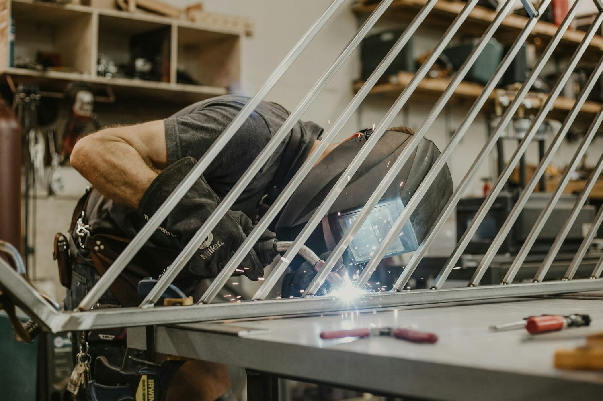
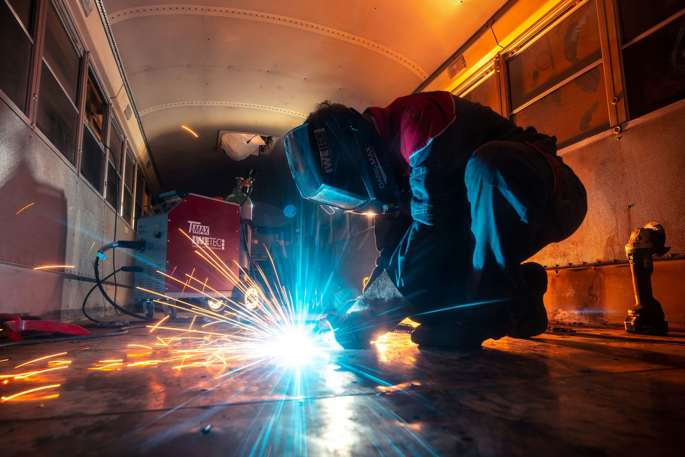
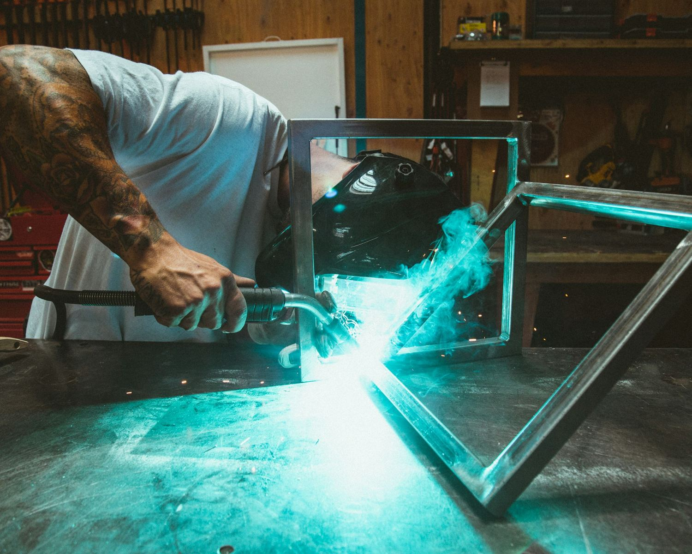
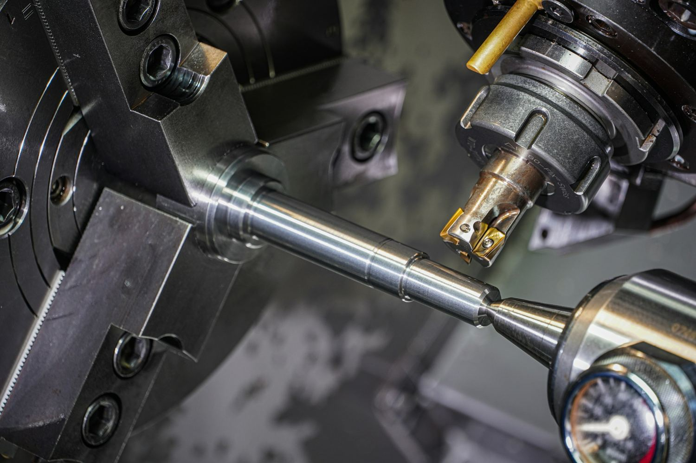
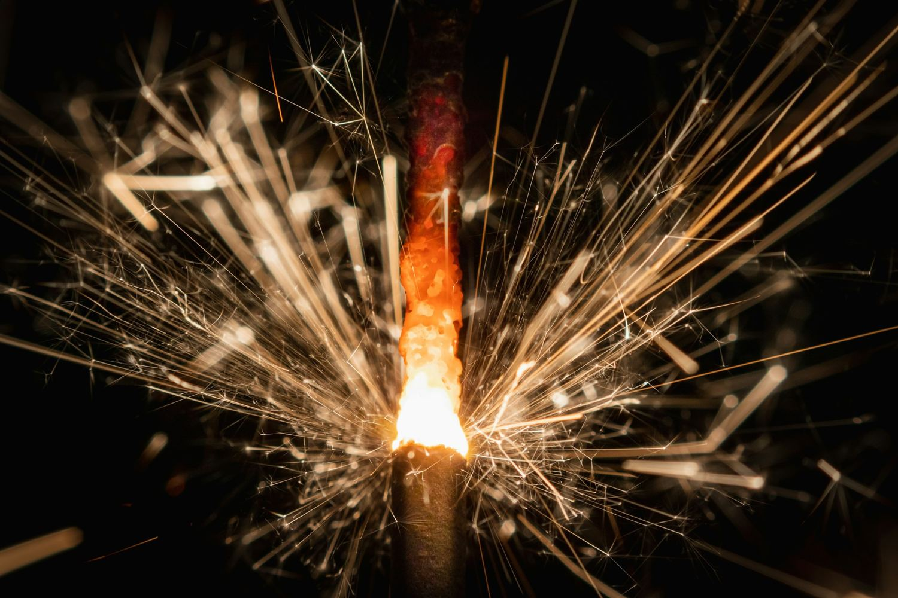
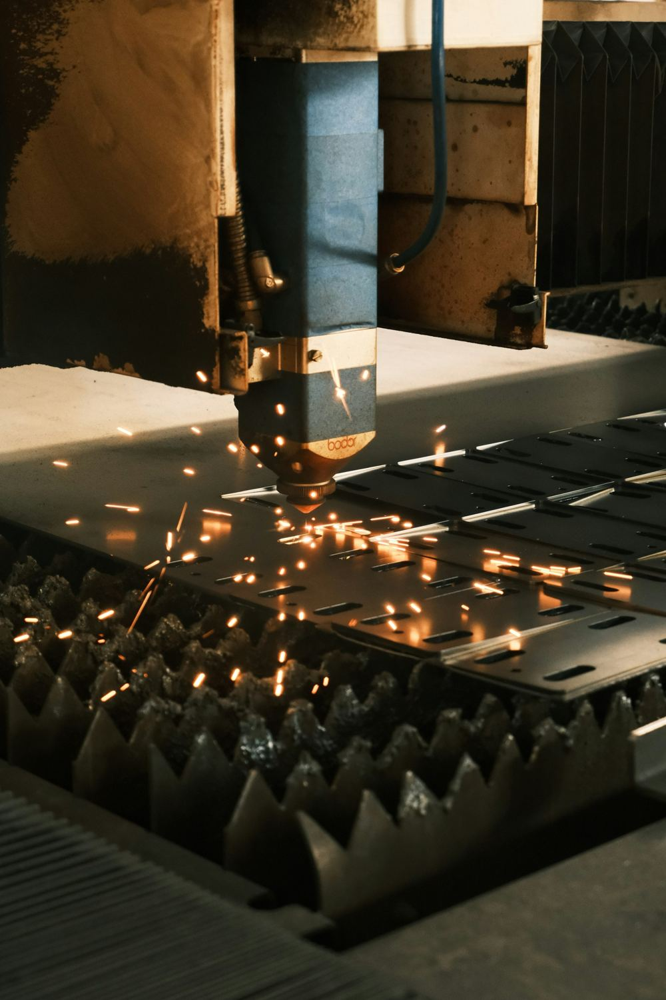
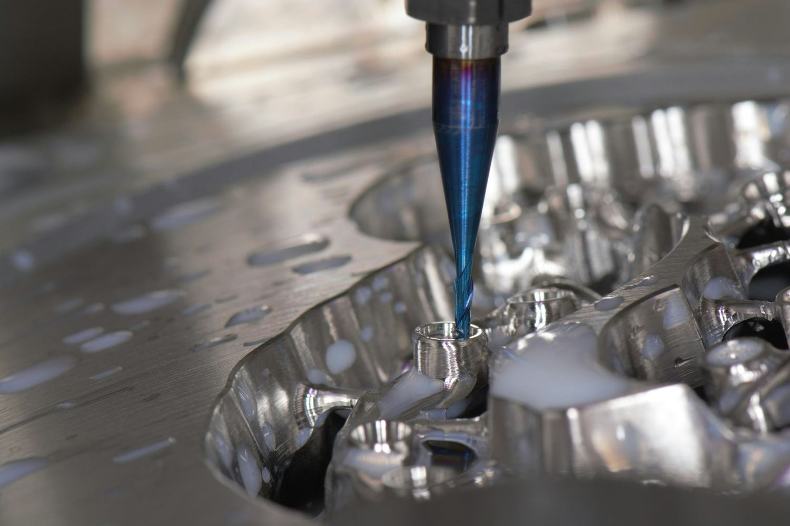
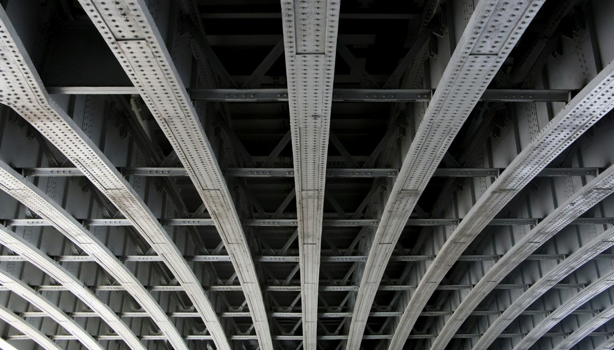
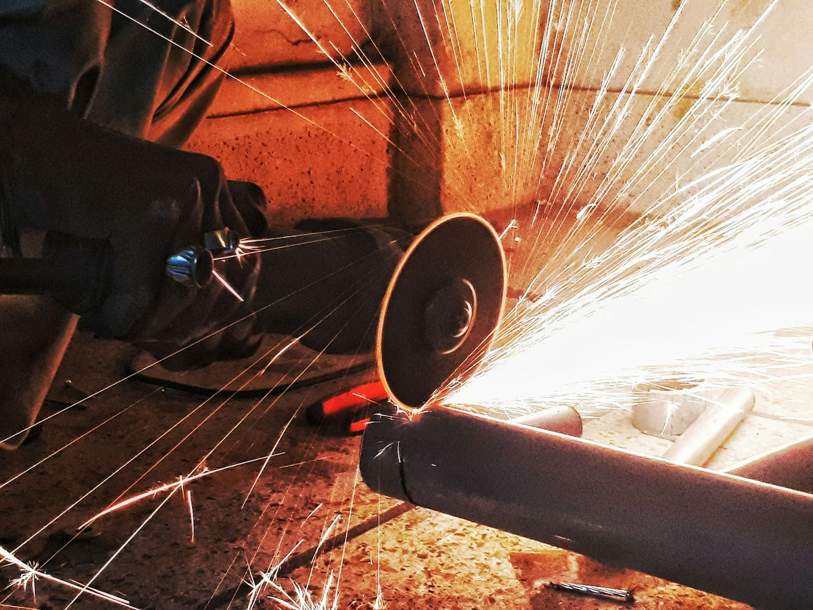
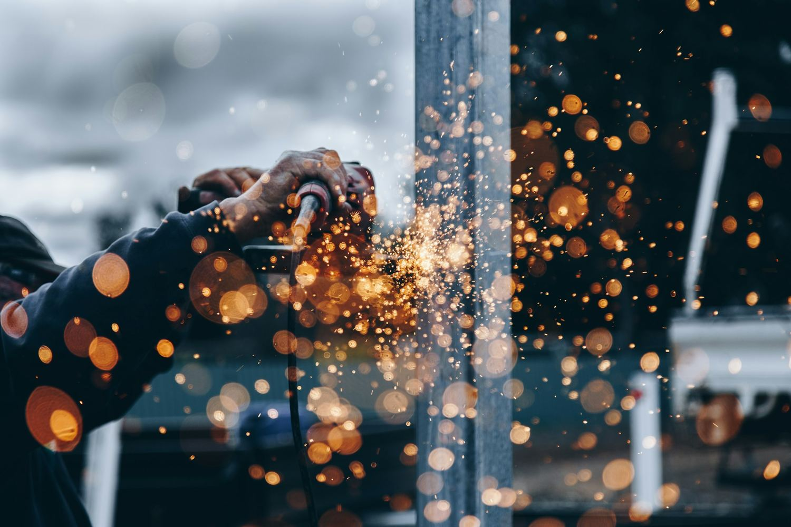

01Zámečnické práce
Výroba, opravy a montáž kovových prvků na míru.
- Kovovýroba podle výkresu i vlastního návrhu
- Údržba a opravy ocelových konstrukcí
- Zábradlí, schodiště, brány, přístřešky
- Servis ve výrobě i na stavbě

ROX GROUP s.r.o. · Praha · od roku 2017
Zámečnické práce, svařování MIG/MAG, TIG a MMA, ocelové konstrukce a CNC obrábění. Pro firmy i soukromé zákazníky po celé České republice i v Evropě.
Co děláme
Zámečnina, svařování a obrábění pod jednou střechou. A k tomu dělení plechu, potrubí, nerez, povrchové úpravy i montáže přímo u vás.

01Výroba, opravy a montáž kovových prvků na míru.

02Čisté a pevné svary oceli i nerezu.

03Přesné díly podle výkresu, kus i série.
Technický list
Každý materiál a každá zakázka potřebuje něco jiného. Metodu vybíráme podle toho, co má svar vydržet a jak má vypadat.
Rychlé a pevné svary pro ocelové konstrukce, rámy a kovovýrobu v dílně i na montáži.
Čisté a přesné svary oceli i nerezu. Tam, kde záleží na vzhledu — zábradlí, potravinářství, pohledové díly.

Obalená elektroda pro montáže v terénu, venku i ve ztížených podmínkách.

Odporové spoje plechů a tenkostěnných dílů bez deformace.

Postup
Zavoláte nebo napíšete, co potřebujete. Pošlete výkres, fotku, nebo jen popis. Když je potřeba, přijedeme se podívat na místo.
Navrhneme postup a materiál, řekneme na rovinu, co je reálné, a pošleme jasnou nabídku s cenou a termínem.
Vyrobíme, namontujeme, zkontrolujeme a předáme. A ozveme se i potom, jestli všechno drží, jak má.

Proč ROX GROUP
Nejsme velká fabrika. Jsme parta zámečníků a svářečů, kteří za svou prací stojí — a kteří zvednou telefon.
Ke každé zakázce přistupujeme zvlášť. Hledáme řešení, které dává smysl pro váš provoz, ne standardní šablonu.
Chceme, aby výsledek držel a vydržel. Za kvalitu toho, co odevzdáme, ručíme.
Pracujeme u klientů po celé republice i v zahraničí. Přijedeme tam, kde je práce.
Dopředu řekneme, co je reálné a za jak dlouho. Domluvený termín bereme vážně.
Zámečnické a svářečské práce pro firmy i domácnosti.
MIG/MAG, TIG, MMA a bodové — ocel i nerez.
Montáže a servis po celé ČR i v Evropě.
Každá zakázka má svého člověka, který ji vede.
Z dílny i z montáží
Ocelové konstrukce, potrubí, zábradlí, díly z CNC. Ukázky typů prací, které děláme.






Máte práci?
Napište nám, co potřebujete. Podíváme se na to a řekneme, co je reálné a za jak dlouho.